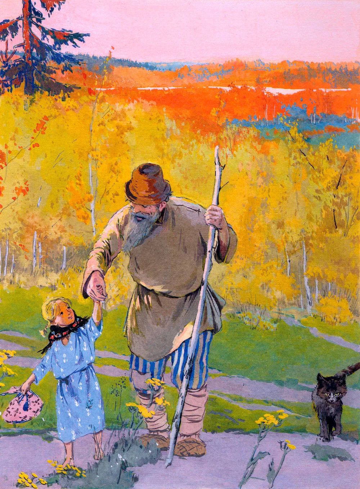
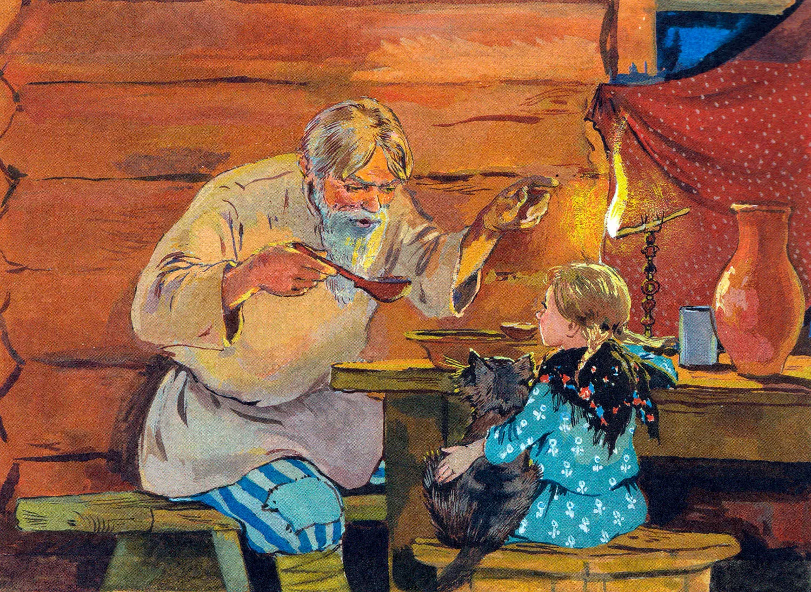
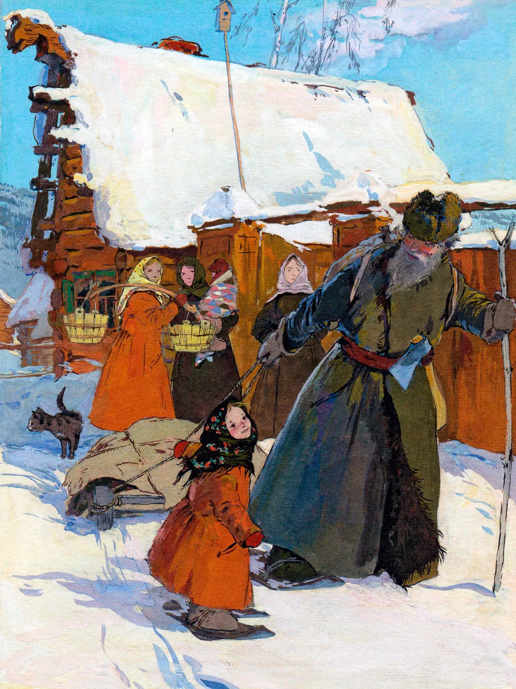
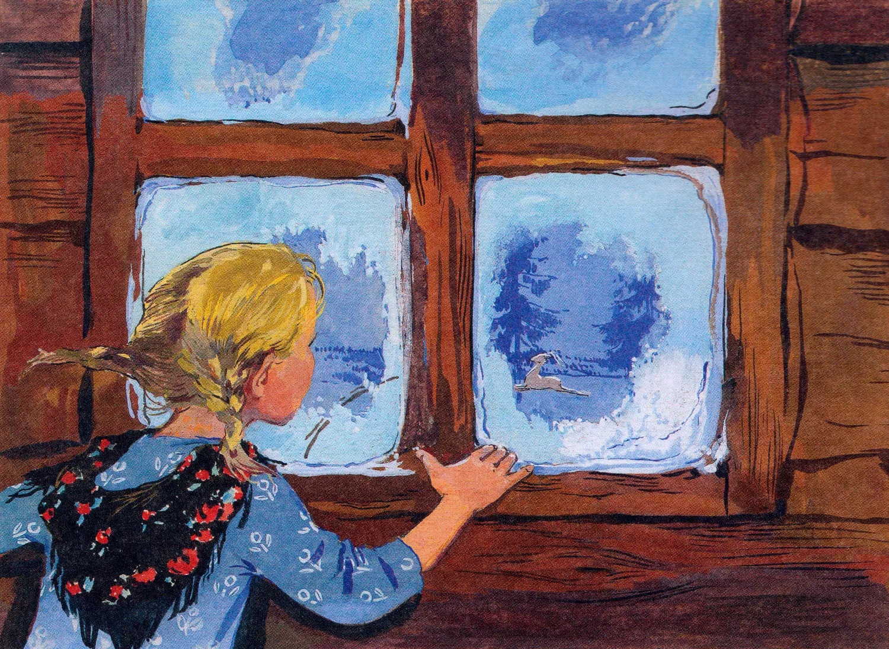
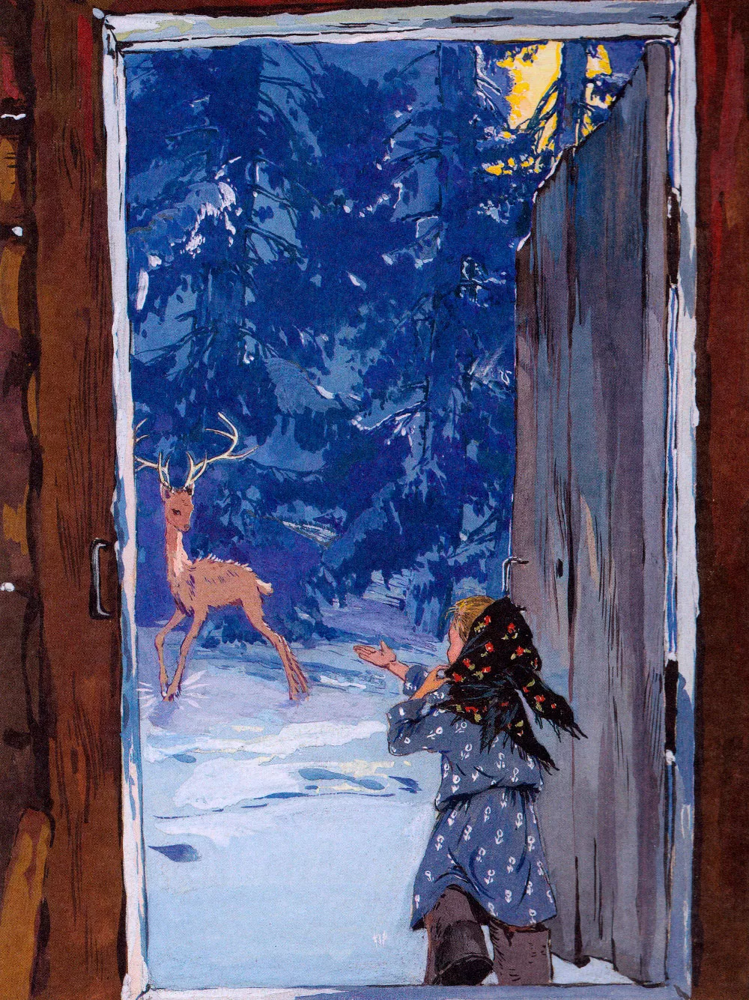
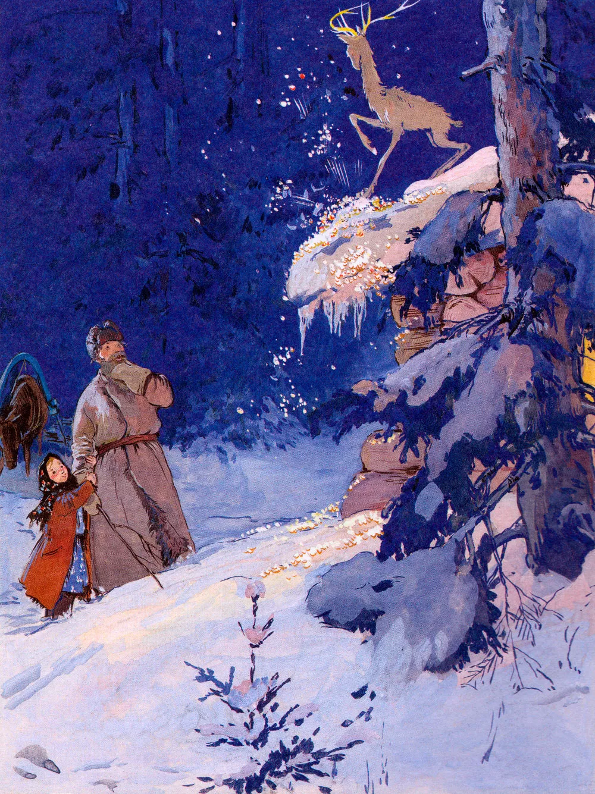

Серебряное копытце
В конец документа
Действующие лица
| Персонаж |
Характеристика |
| Дарёнка |
Главная героиня сказки. Она сирота, живёт с дедом Кокованей. Дарёнка — добрая, любопытная девочка с
большим сердцем. Её отличает смелость, искренность и любовь к природе. Несмотря на свою юную возраст,
она проявляет заботу и уважение к дедушке.
|
| Кокованя (дедушка) |
Старик, который приютил Дарёнку после смерти её родителей. Дед Кокованя мудрый, добрый и заботливый человек.
Он любит природу и рассказывает внучке истории о таинственных событиях в горах. Его характер спокойный и рассудительный,
хотя иногда он бывает строгим.
|
| Серебряное Копытце |
Волшебный козлик, который оставляет отпечатки своих серебряных копытцев, превращая камни в драгоценности.
Это загадочное существо символизирует щедрость природы и магию Урала. Серебряное Копытце также олицетворяет
силу легенды и предания, переданные через поколения.
|
| Мурзинка |
Кошка Дарёнки, верный друг девочки. Мурзинка помогает ей согреться холодными ночами и создаёт уют в доме.
Кошка символизирует тепло домашнего очага и верность.
|
Текст сказки
Семьи у Коковани не осталось, он и придумал взять в дети сиротку. Спросил у
соседей — не знают ли кого, а соседи и говорят:
— Недавно на Глинке осиротела семья Григория Потопаева. Старших-то
девчонок приказчик велел в барскую рукодельню взять, а одну девчоночку по
шестому году никому не надо. Вот ты и возьми её.
— Несподручно мне с девчонкой-то. Парнишечко бы лучше. Обучил
бы его своему делу, пособника бы растить стал. А с девчонкой как? Чему
я её учить-то стану?
Потом подумал-подумал и говорит:
— Знавал я Григорья, да и жену его тоже. Оба весёлые да ловкие были.
Если девчоночка по родителям пойдёт, не тоскливо с ней в избе будет. Возьму
её. Только пойдёт ли?
Соседи объясняют:
— Плохое житьё у неё. Приказчик избу Григорьеву отдал какому-то горюну и
велел за это сиротку кормить, пока не подрастёт. А у того своя семья больше десятка.
Сами не досыта едят. Вот хозяйка и взъедается на сиротку, попрекает её куском-то.
Та хоть маленькая, а понимает. Обидно ей. Как не пойдёт от такого житья! Да и
уговоришь, поди-ка.
— И то правда,— отвечает Кокованя. — Уговорю как-нибудь.

В праздничный день и пришёл он к тем людям, у кого сиротка жила. Видит —
полна изба народу, больших и маленьких. У печки девчоночка сидит, а рядом с ней
кошка бурая. Девчоночка маленькая, и кошка маленькая и до того худая да ободранная,
что редко кто такую в избу пустит. Девчоночка эту кошку гладит, а она до того
звонко мурлычет, что по всей избе слышно. Поглядел Кокованя на девчоночку и
спрашивает:
— Это у вас Григорьева-то подарёнка? Хозяйка отвечает:
— Она самая. Мало одной-то, так ещё кошку драную где-то подобрала.
Отогнать не можем. Всех моих ребят перецарапала, да ещё корми её!
Кокованя и говорит:
— Неласковые, видно, твои ребята. У ней вон мурлычет.
Потом и спрашивает у сиротки:
— Ну как, подарёнушка, пойдёшь ко мне жить? Девчоночка удивилась:
— Ты, дедо, как узнал, что меня Дарёнкой зовут?
— Да так, — отвечает,— само вышло. Не думал, не гадал, нечаянно
попал.
— Ты хоть кто? — спрашивает девчоночка.
— Я, — говорит, — вроде охотника. Летом пески промываю,
золото добываю, а зимой по лесам за козлом бегаю, да всё увидеть не могу.
— Застрелишь его?
— Нет, — отвечает Кокованя. — Простых козлов стреляю,
а этого не стану. Мне посмотреть охота, в котором месте он правой передней
ножкой топнет.
— Тебе на что это?
— А вот пойдёшь ко мне жить, так всё и расскажу. Девчоночке любопытно стало
про козла-то узнать. И то видит — старик весёлый да ласковый. Она и говорит:
— Пойду. Только ты эту кошку, Мурёнку, тоже возьми. Гляди, какая хорошая.
— Про это,— отвечает Кокованя,— что и говорить. Такую звонкую
кошку не взять — дураком остаться. Вместо балалайки она у нас в избе будет.
Хозяйка слышит их разговор. Рада-радёхонька, что Кокованя сиротку к себе зовёт.
Стала скорей Дарёнкины пожитки собирать. Боится, как бы старик не передумал.
Кошка будто тоже понимает весь разговор. Трётся у ног-то да мурлычет:
“Пр-равильно придумал. Пр-равильно”.

Вот и повёл Кокованя сиротку к себе жить. Сам большой да бородатый, а она махонькая,
и носишко пуговкой. Идут по улице, и кошчонка ободранная за ними попрыгивает.
Так и стали жить вместе дед Кокованя, сиротка Дарёна да кошка Мурёнка.
Жили-поживали, добра много не наживали, а на житьё не плакались, и у всякого
дело было. Кокованя с утра на работу уходил, Дарёнка в избе прибирала, похлёбку
да кашу варила, а кошка Мурёнка на охоту ходила — мышей ловила. К вечеру
соберутся, и весело им.

Старик был мастер сказки сказывать. Дарёнка любила те сказки слушать, а кошка
Мурёнка лежит да мурлычет:
“Пр-равильно говорит. Пр-равильно”.
Только после всякой сказки Дарёнка напомнит:
— Дедо, про козла-то скажи. Какой он?
Кокованя отговаривался сперва, потом и рассказал:
— Тот козёл особенный. У него на правой передней ноге серебряное копытце.
В каком месте топнет этим копытцем, там и появится дорогой камень. Раз топнет
— один камень, два топнет — два камня, а где ножкой бить станет
— там груда дорогих камней.
Сказал это, да и не рад стал. С той поры у Дарёнки только и разговору что об
этом козле.
— Дедо, а он большой?
Рассказал ей Кокованя, что ростом козёл не выше стола, ножки тоненькие, головка
лёгонькая. А Дарёнка опять спрашивает:
— Дедо, а рожки у него есть?
— Рожки-то, — отвечает, — у него отменные. У простых козлов
на две веточки, а у этого — на пять веток.
— Дедо, а он кого ест?
— Никого, — отвечает, — не ест. Травой да листом кормится.
Ну, сено тоже зимой в стожках подъедает.
— Дедо, а шёрстка у него какая?
— Летом, — отвечает, — буренькая, как вот у Мурёнки нашей, а
зимой серенькая.
Стал осенью Кокованя в лес собираться. Надо было ему поглядеть, в которой
стороне козлов больше пасётся. Дарёнка и давай проситься:
— Возьми меня, дедо, с собой! Может, я хоть сдалека того козлика увижу.
Кокованя и объясняет ей:
— Сдалека-то его не разглядишь. У всех козлов осенью рожки есть.
Не разберёшь, сколько на них веток. Зимой вот — дело другое. Простые
козлы зимой безрогие ходят, а этот — Серебряное Копытце —
всегда с рожками, хоть летом, хоть зимой. Тогда его сдалека признать можно.
Этим и отговорился. Осталась Дарёнка дома, а Кокованя в лес ушел.
Дней через пять воротился Кокованя домой, рассказывает Дарёнке:
— Ныне в Полдневской стороне много козлов пасётся. Туда и пойду зимой.
— А как же, — спрашивает Дарёнка, — зимой-то в лесу ночевать станешь?
— Там, — отвечает, — у меня зимний балаган у покосных ложков поставлен.
Хороший балаган, с очагом, с окошечком. Хорошо там.
Дарёнка опять спрашивает:
— Дедо, а Серебряное Копытце в той же стороне пасётся?
— Кто его знает. Может, и он там.
Дарёнка тут и давай проситься:
— Возьми меня, дедо, с собой! Я в балагане сидеть буду. Может,
Серебряное Копытце близко подойдёт — я и погляжу.
Старик сперва руками замахал:
— Что ты! Что ты! Статочное ли дело зимой по лесу маленькой девчонке ходить! На лыжах
ведь надо, а ты не умеешь. Угрузнешь в снегу-то. Как я с тобой буду? Замёрзнешь ещё!
Только Дарёнка никак не отстаёт:
— Возьми, дедо! На лыжах-то я маленько умею. Кокованя отговаривал-отговаривал, потом и подумал про себя: “Сводить разве? Раз побывает — в другой не запросится”.
Вот он и говорит:
— Ладно, возьму. Только, чур, в лесу не реветь и домой до времени не проситься.
Как зима в полную силу вошла, стали они в лес собираться. Уложил Кокованя на ручные санки сухарей два мешка, припас охотничий и другое, что ему надо. Дарёнка тоже узелок себе навязала. Лоскуточков взяла кукле платье шить, ниток клубок, иголку да ещё верёвку. “Нельзя ли, — думает, — этой верёвкой Серебряное Копытце поймать?”
Жаль Дарёнке кошку свою оставлять, да что поделаешь! Гладит кошку-то на прощанье, разговаривает с ней:
— Мы, Мурёнка, с дедом в лес пойдём, а ты дома сиди, мышей лови. Как увидим Серебряное Копытце, так и воротимся. Я тебе тогда всё расскажу.
Кошка лукаво посматривает, а сама мурлычет: “Пр-ра-вильно придумала. Пр-равильно”.

Пошли Кокованя с Дарёнкой. Все соседи дивуются:
— Из ума выжил старик! Такую маленькую девчонку в лес зимой повёл!
Как стали Кокованя с Дарёнкой из заводу выходить, слышат — собачонки что-то сильно забеспокоились. Такой лай да визг подняли, будто зверя на улицах увидали. Оглянулись, — а это Мурёнка серединой улицы бежит, от собак отбивается. Мурёнка к той поре поправилась. Большая да здоровая стала. Собачонки к ней и подступиться не смеют.
Хотела Дарёнка кошку поймать да домой унести, только где тебе! Добежала Мурёнка до лесу, да и на сосну. Пойди поймай!
Покричала Дарёнка, но не могла кошку приманить. Что делать? Пошли дальше. Глядят — Мурёнка стороной бежит. Так и до балагана добралась.
Вот и стало их в балагане трое. Дарёнка хвалится:
— Веселее так-то.
Кокованя поддакивает:
— Известно, веселее.
А кошка Мурёнка свернулась клубочком у печки и звонко мурлычет: “Пр-равильно говоришь. Пр-равильно”.
Козлов в ту зиму много было. Это простых-то. Кокованя каждый день то одного, то двух к балагану притаскивал. Шкурок у них накопилось, козлиного мяса насолили — на ручных санках не увезти. Надо бы в завод за лошадью сходить, да как Дарёнку с кошкой в лесу оставить! А Дарёнка попривыкла в лесу-то. Сама говорит старику:
— Дедо, сходил бы ты в завод за лошадью. Надо ведь солонину домой перевезти. Кокованя даже удивился:
— Какая ты у меня разумница, Дарья Григорьевна! Как большая рассудила. Только забоишься, поди, одна-то.
— Чего, — отвечает, — бояться! Балаган у нас крепкий, волкам не добиться. И Мурёнка со мной. Не забоюсь. А ты поскорее ворочайся всё-таки!
Ушёл Кокованя. Осталась Дарёнка с Мурёнкой. Днём-то привычно было без Коковани сидеть, пока он козлов выслеживал… Как темнеть стало, запобаивалась. Только глядит — Мурёнка лежит спокойнёхонько. Дарёнка и повеселела. Села к окошечку, смотрит в сторону покосных ложков и видит — от лесу какой-то комочек катится.

Как ближе подкатился, разглядела — это козёл бежит. Ножки тоненькие, головка лёгонькая, а на рожках по пяти веточек. Выбежала Дарёнка поглядеть, а никого нет. Подождала-подождала, воротилась в балаган, да и говорит:
— Видно, задремала я. Мне и показалось. Мурёнка мурлычет: “Пр-равильно говоришь. Пр-равильно”.
Легла Дарёнка рядом с кошкой да и уснула до утра.
Другой день прошёл. Не воротился Кокованя. Скучненько стало Дарёнке, а не плачет. Гладит Мурёнку да приговаривает:
— Не скучай, Мурёнушка! Завтра дедо непременно придёт.
Мурёнка свою песенку поёт: “Пр-равильно говоришь. Пр-равильно”.
Посидела опять Дарёнушка у окошка, полюбовалась на звёзды. Хотела спать ложиться — вдруг по стенке топоток прошёл. Испугалась Дарёнка, а топоток по другой стене, потом по той, где окошечко, потом — где дверка, а там и сверху запостукивало. Негромко, будто кто лёгонький да быстрый ходит.
Дарёнка и думает: “Не козёл ли тот, вчерашний, прибежал?”

И до того ей захотелось поглядеть, что и страх не держит. Отворила дверку, глядит, а козёл — тут, вовсе близко. Правую переднюю ножку поднял — вот топнет, а на ней серебряное копытце блестит, и рожки у козла о пяти ветках.
Дарёнка не знает, что ей делать, да и манит его, как домашнего:
— Ме-ка! Ме-ка!
Козёл на это как рассмеялся! Повернулся и побежал.
Пришла Дарёнушка в балаган, рассказывает Мурёнке:
— Поглядела я на Серебряное Копытце. И рожки видела и копытце видела. Не видела только, как тот козлик ножкой топает, дорогие камни выбивает. Другой раз, видно, покажет.
Мурёнка знай свою песенку поёт: “Пр-равильно говоришь. Пр-равильно”.
Третий день прошёл, а все Коковани нет. Вовсе затуманилась Дарёнка. Слёзки запокапывали. Хотела с Мурёнкой поговорить, а её нету. Тут вовсе испугалась Дарёнушка, из балагана выбежала кошку искать.
Ночь месячная, светлая, далеко видно. Глядит Дарёнка — кошка близко на покосном ложке сидит, а перед ней козёл. Стоит, ножку поднял, а на ней серебряное копытце блестит.
Мурёнка головой покачивает, и козёл тоже. Будто разговаривают. Потом стали по покосным ложкам бегать.
Бежит-бежит козёл, остановится и давай копытцем бить. Мурёнка подбежит, козёл дальше отскочит и опять копытцем бьёт. Долго они так-то по покосным ложкам бегали. Не видно их стало. Потом опять к самому балагану воротились.
Тут вспрыгнул козёл на крышу и давай по ней серебряным копытцем бить. Как искры, из-под ножки-то камешки посыпались. Красные, голубые, зелёные, бирюзовые — всякие.
К этой поре как раз Кокованя и вернулся. Узнать своего балагана не может. Весь он как ворох дорогих камней стал. Так и горит-переливается разными огнями. Наверху козёл стоит — и всё бьёт да бьёт серебряным копытцем, а камни сыплются да сыплются.

Вдруг Мурёнка скок туда же! Встала рядом с козлом, громко мяукнула, и ни Мурёнки, ни Серебряного Копытца не стало.
Кокованя сразу полшапки камней нагрёб, да Дарёнка запросила:
— Не тронь, дедо! Завтра днём ещё на это поглядим.
Кокованя и послушался. Только к утру-то снег большой выпал. Все камни и засыпало. Перегребали потом снег-то, да ничего не нашли. Ну, им и того хватило, сколько Кокованя в шапку нагрёб.
Всё бы хорошо, да Мурёнки жалко. Больше её так и не видали, да и Серебряное Копытце тоже не показался. Потешил раз — и будет.
А по тем покосным ложкам, где козёл скакал, люди камешки находить стали. Зелёненькие больше. Хризолитами называются. Видали?
Информация о тексте
Создание произведения
-
Фольклорные корни: Павел Бажов родился и вырос на Урале, где с детства слышал множество народных преданий,
легенд и сказаний. Эти рассказы передавались из уст в уста среди рабочих и крестьян, часто касаясь темы гор,
рудников и природных богатств региона. Одним из таких преданий было поверье о волшебном козлике, оставляющем
следы в виде драгоценных камней.
-
Работа над сборником "Малахитовая шкатулка": В 1930-е годы Бажов начал собирать и записывать уральские народные
сказания. Эти материалы легли в основу его знаменитого сборника "Малахитовая шкатулка", куда вошла и сказка
"Серебряное копытце". Сборник был опубликован в 1939 году и стал одним из самых известных произведений Бажова.
-
Личное вдохновение: Бажов сам работал на заводах и рудниках Урала, что позволило ему глубоко проникнуться
атмосферой и культурой местного населения. Его личные впечатления от природы и быта уральских мастеров нашли
отражение в его произведениях.
-
Создание образа главных героев: Персонажи сказки — девочка Дарёнка, дед Кокованя и волшебный козлик — воплощают
традиционные образы русского фольклора: мудрого старика, доверчивого ребенка и чудесного существа,
символизирующего природное богатство и удачу.
-
Тема богатства и счастья: Сказка затрагивает важные социальные и философские вопросы, такие как отношение
человека к богатству, природе и труду. Через образ Серебряного Копытца Бажов показывает, что истинное счастье
не в материальных ценностях, а в доброте, любви и гармонии с окружающим миром.
Другие интересные произведения
-
Каменный цветок — другая известная сказка П.П. Бажова из цикла "Малахитовая шкатулка". Рассказывает о мастере
Даниле, который стремился создать идеальный каменный цветок, но столкнулся с выбором между искусством и природой.
-
Волшебное кольцо — русская народная сказка о бедняке, которому волею судьбы достаётся волшебное кольцо,
исполняющее желания. Однако богатство не приносит счастья, пока герой не находит настоящую любовь.
-
Цветик-семицветик — советская сказка Валентина Катаева о девочке Жене, получившей волшебный цветок,
исполняющий семь желаний. Последнее желание оказывается самым важным и трогательным.
-
Щелкунчик и Мышиный король — сказка Э.Т.А. Гофмана, наполненная волшебством и чудесами. Героиня Мари
сталкивается с удивительными приключениями в мире игрушек и фэнтези.
-
Пиноккио — итальянская сказка Карло Коллоди о деревянном мальчике, который стремится стать настоящим
человеком. Эта история учит важности честности и доброты.
-
Холодное сердце — датская сказка Ханса Кристиана Андерсена о мальчике Кае, похищенном Снежной королевой.
Его подруга Герда отправляется на поиски, чтобы спасти друга.
-
Алиса в Стране Чудес — английская сказка Льюиса Кэрролла, полная абсурдизма и фантазии.
Алиса попадает в мир, где всё возможно, и встречает множество странных существ.
-
Маленький принц — французская повесть Антуана де Сент-Экзюпери, рассказывающая о путешествиях
маленького принца по разным планетам. Эта философская сказка исследует темы дружбы, любви и смысла жизни.
-
Гадкий утёнок — ещё одна знаменитая сказка Ханса Кристиана Андерсена о птичке, которая,
несмотря на неприязнь окружающих, превращается в прекрасного лебедя. Тема принятия себя и
преодоления трудностей звучит здесь особенно ярко.
-
Дюймовочка — также сказка Андерсена о маленькой девочке, рождённой из цветка. Её приключения полны
опасностей и испытаний, но в конце она находит своё счастье.
Эти произведения объединяет атмосфера волшебства, наличие необычных существ и глубокая мораль,
которая делает их близкими по духу к "Серебряному копытцу".
Полезная информация
Сайт с которого был взят текст и изображение
В начало страницы